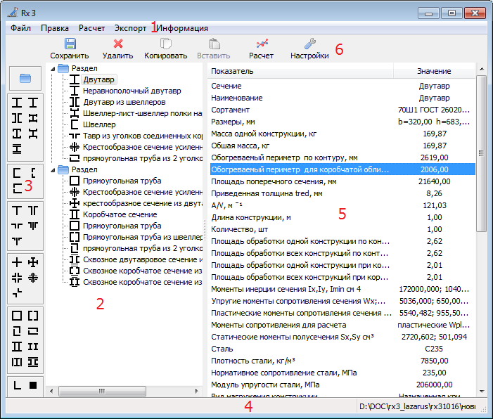

Главное
окно

1 Главное
меню.
2 Поле для
иерархического отображения добавленных разделов и конструкций.
3 Панель с
кнопками для добавления разделов и конструкций.
4 Панель
статуса.
5 Таблица
данных выбранной конструкции
или раздела.
6 Панель
быстрых кнопок.